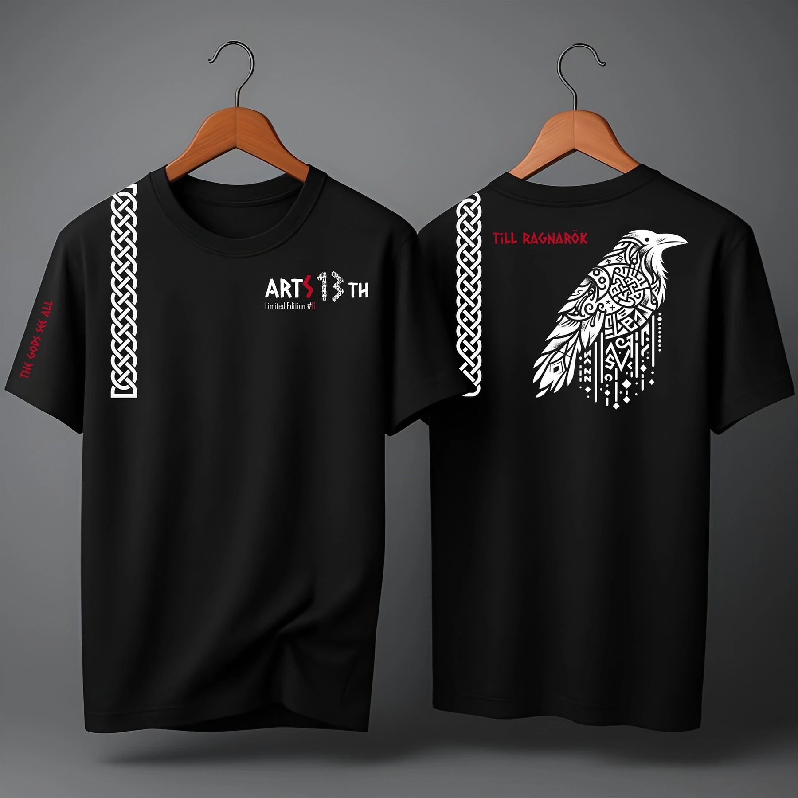
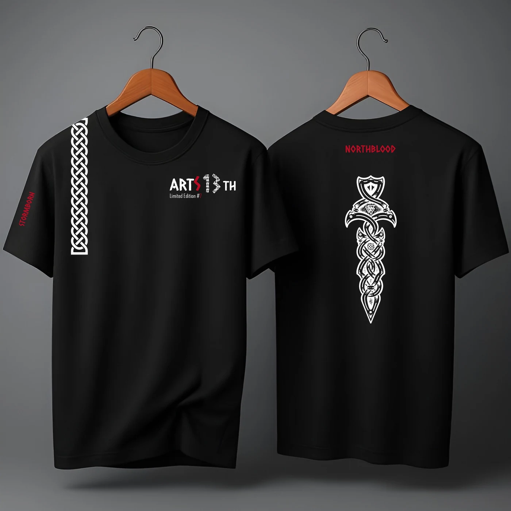
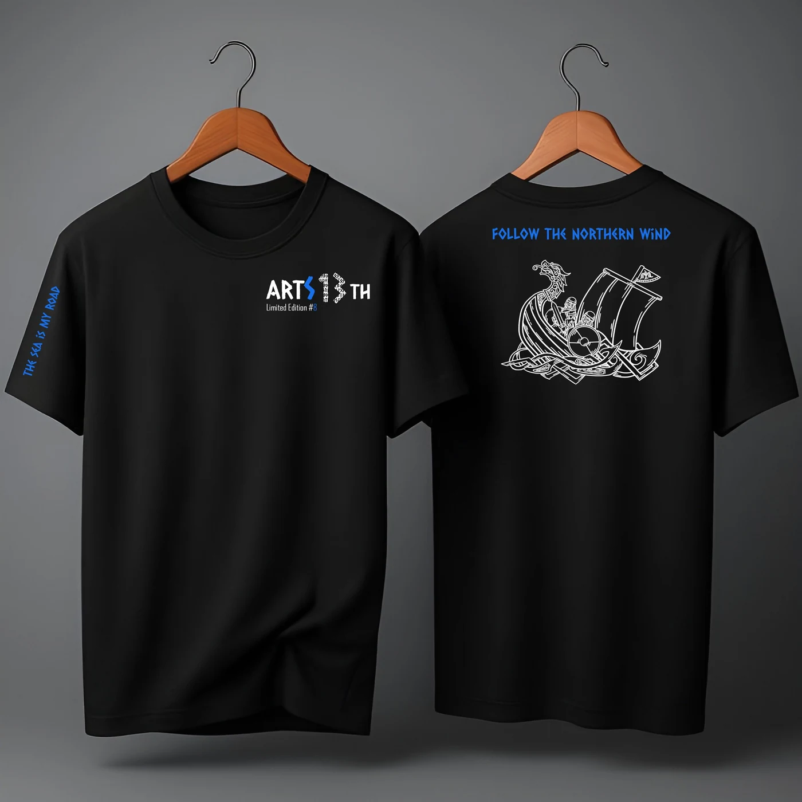
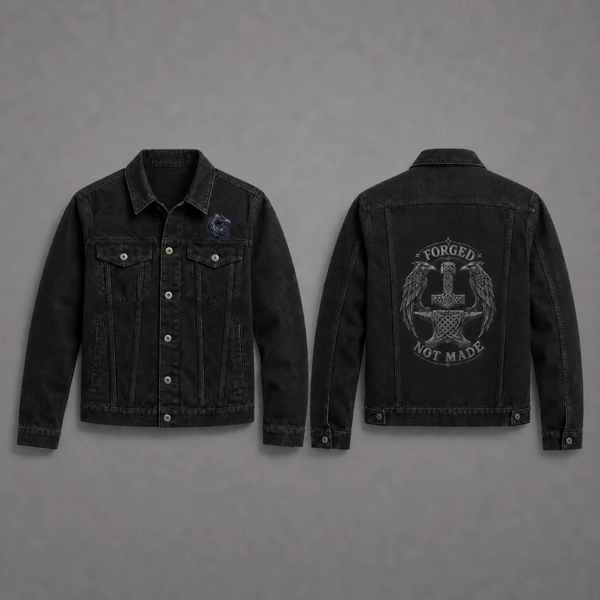
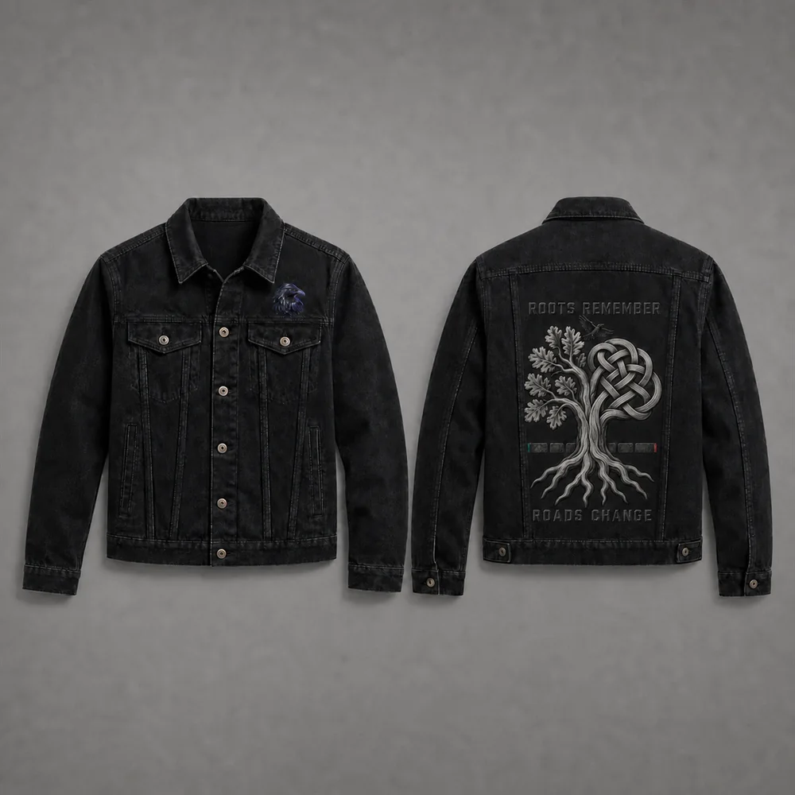
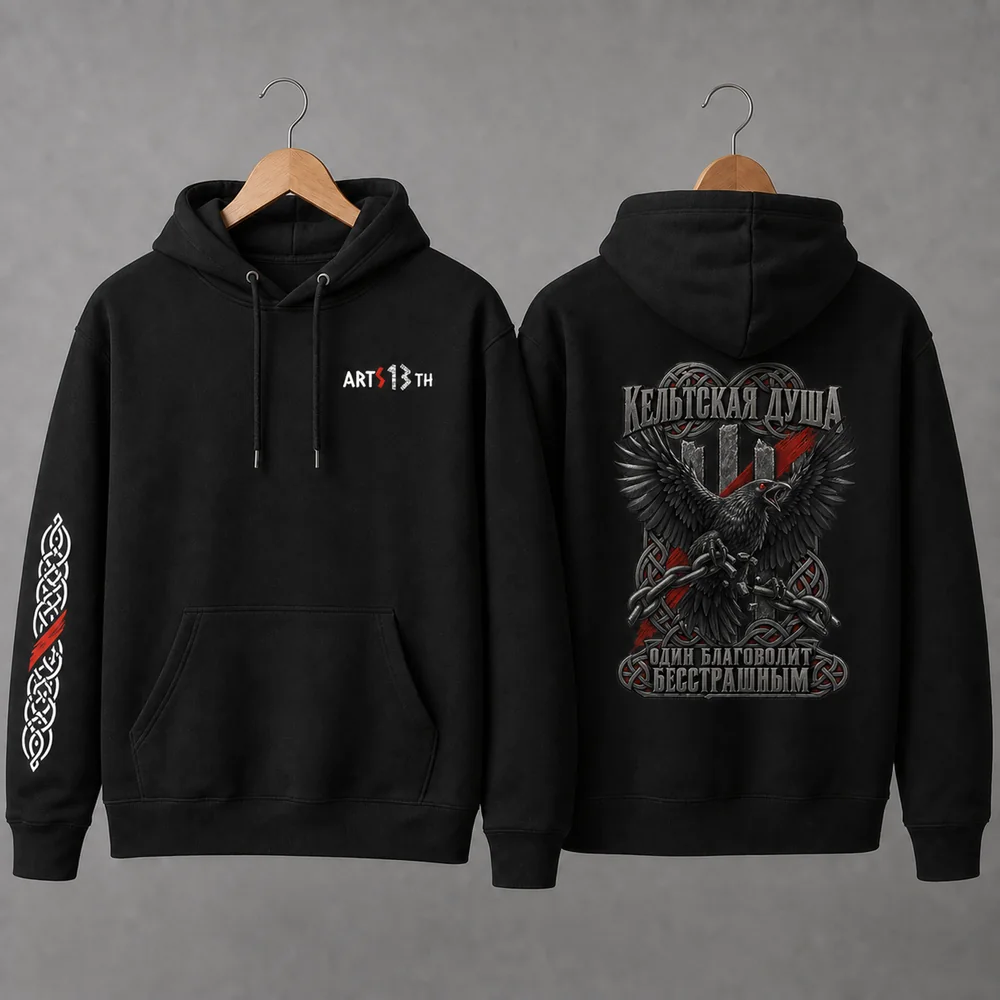
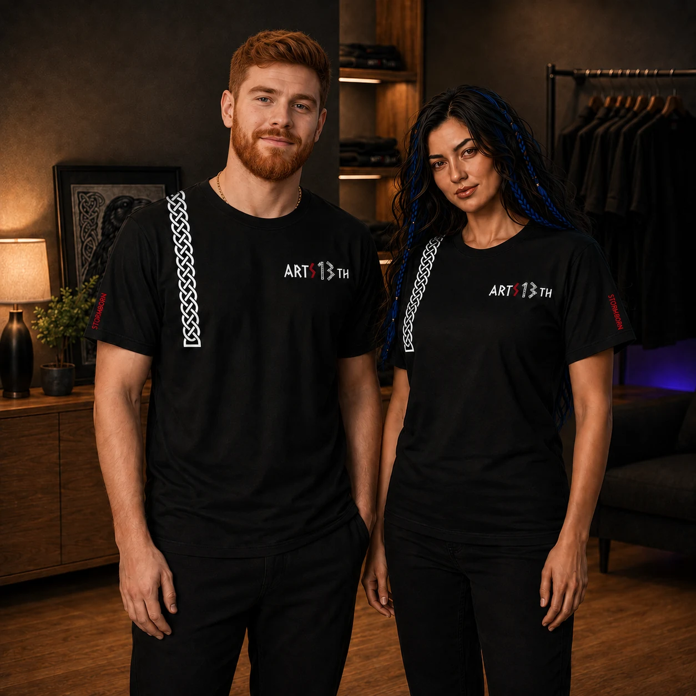
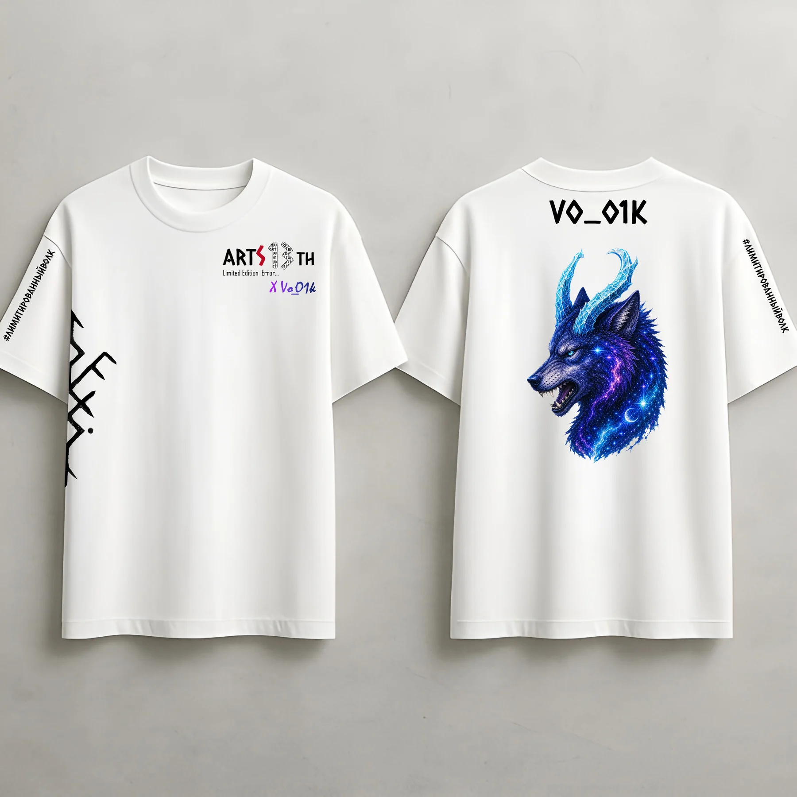
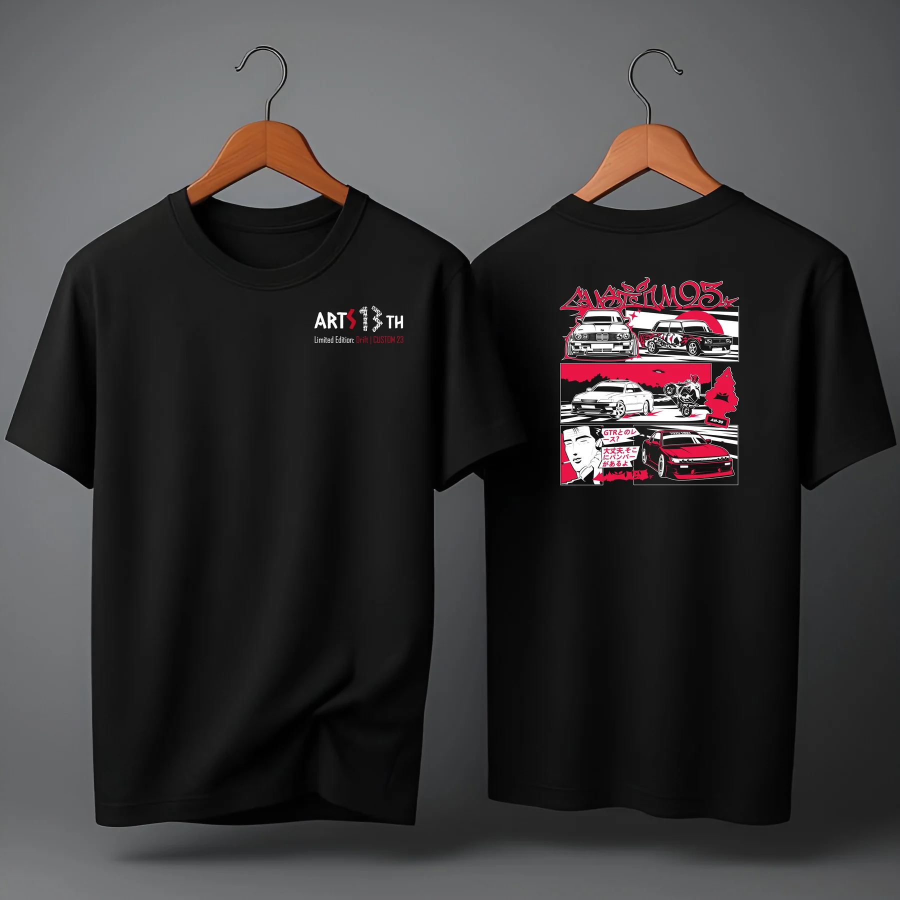

Футболка · 13thДизайн коллекции
Till Ragnarök
Белое плетение и ворон на чёрной основе.

Авторская одежда ArtS13Studio
Своя графика. Северные образы.
Вещи, в которых узнаёшь себя.
01 / Коллекция 13th
От лаконичного знака до сложной графики.
Шесть характеров одной коллекции.

Белое плетение и ворон на чёрной основе.

Северный орнамент и красный акцент.

Ладья, тонкие линии и холодный синий.

Графика о характере, который выковывают.

Дерево, корни и память о своём пути.

Ворон и сложное металлическое плетение.
Макеты коллекции. В галереях — принты и доступные ракурсы.
Вся одежда 13th
02 / За каждым принтом — история
Плетение, которое хочется рассмотреть. Знак, который становится своим.
Ворон, дерево, ветер и переплетённые линии — образы северной серии 13th. У каждой вещи свой рисунок и настроение, а вместе они складываются в узнаваемую историю.
03 / Авторский мерч
Дизайн и печать авторского мерча
Для себя, команды или проекта. Начинаем с вашей идеи и собираем графику, которая передаёт именно ваш характер.
Обсудить идею
13th × Волк
«Большой и пушистый» — характер человека в собственном принте.
Посмотреть проект
13th × Custom23
Четыре персональных рисунка, объединённых общей историей.
Посмотреть проектОбсуждаем, для кого вещь, её настроение и ваши референсы.
Собираем рисунок и показываем его расположение на одежде.
Уточняем основу, размеры, количество, стоимость и сроки.
После согласования готовим принт и переходим к нанесению.
04 / Студия, в которой рождается 13th
ArtS13Studio объединяет людей и идеи. 13th превращает их в одежду.
Мы работаем с авторской графикой, дизайном и печатью мерча. Нас интересуют вещи с личным смыслом: от небольшого знака до подробной композиции, которую хочется рассматривать.
Жизнь студии во ВКонтактеПеред первым сообщением
Да. Пришлите рисунок или референсы и расскажите, на какой вещи хотите его видеть. Посмотрим, что потребуется для подготовки макета к печати.
Откройте понравившуюся модель и напишите нам её название. Уточним возможность изготовления, основу, размер и расположение принта. Изображения в каталоге показывают дизайн; наличие и параметры обсуждаем отдельно.
Расскажите о типе одежды, количестве вещей, рисунке и желаемом сроке. Если пока есть только идея, начнём с неё. Стоимость и сроки согласуем по конкретному проекту.
Есть своя идея?
Пришли название вещи, свой рисунок или пару слов о будущем мерче.

Музыкальное направление ArtS13Studio
«Код ворона» уже звучит. Альбом #Dark music готовится.